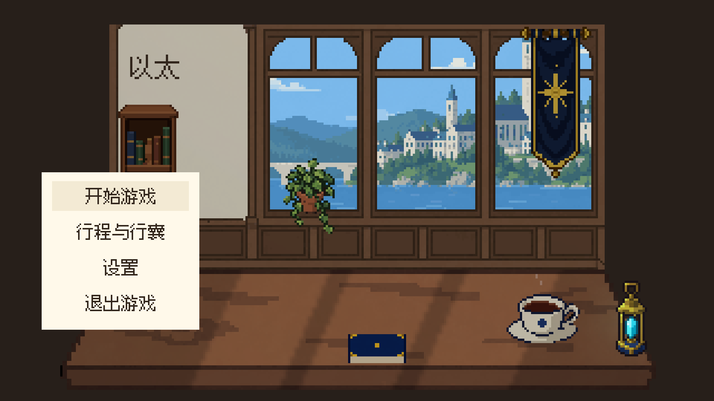
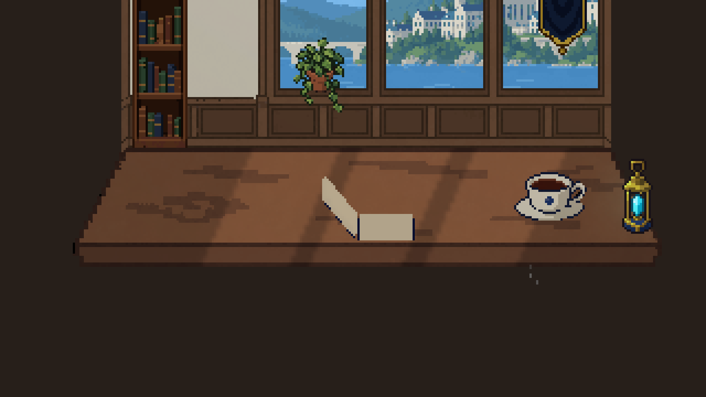
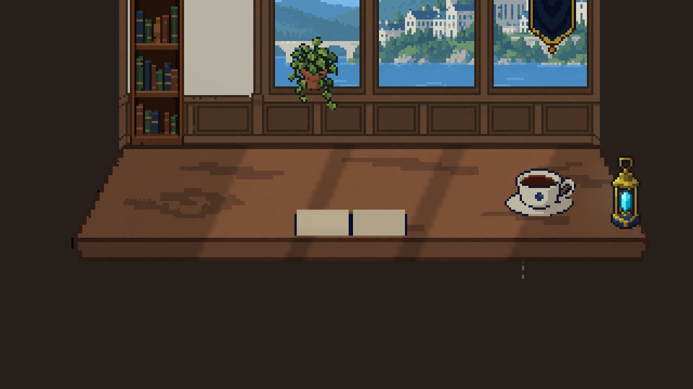
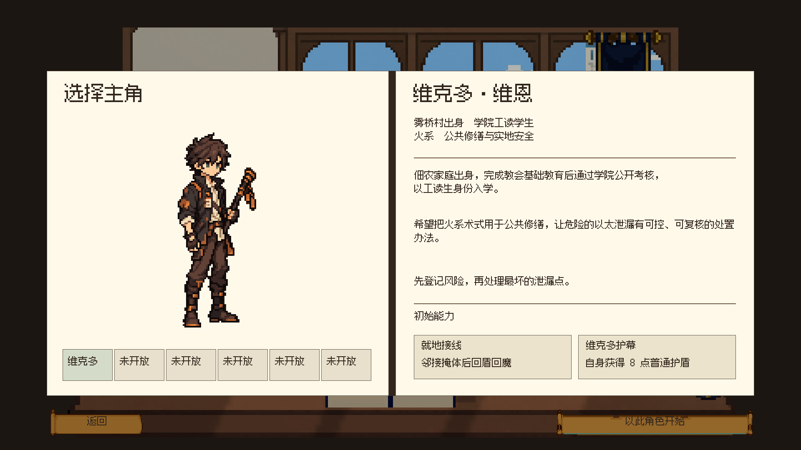
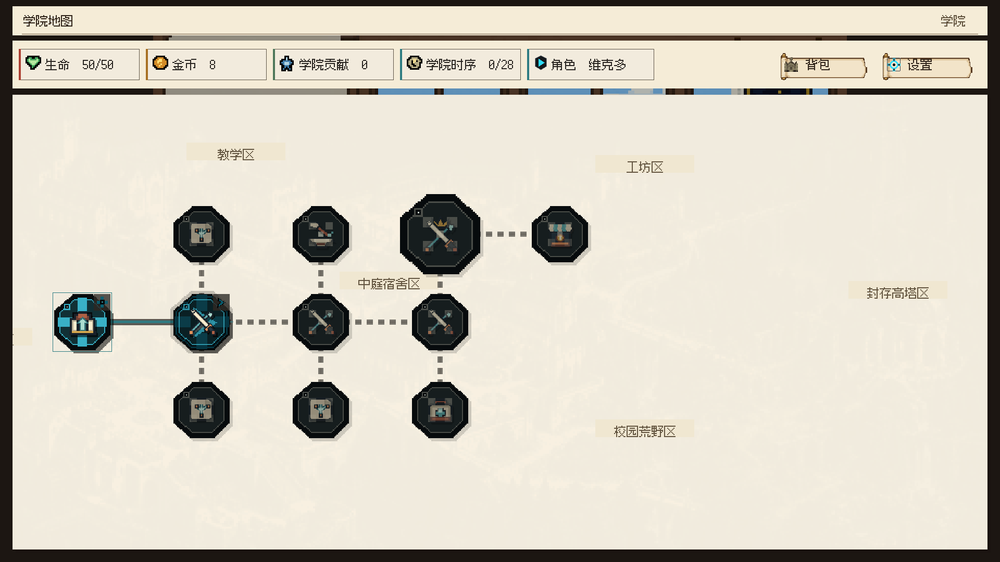

以太 · 分层书本动画样板
静态封面材质＋固定书脊＋左右页块。以下为真实 Unity 低分辨率渲染录像，先看无遮挡的开合动作。
这段循环仅驱动书本和镜头，未盖转场纸页。五个姿态检查通过：铰链位置固定，封面闭合高度为3原生像素，展开后落回桌面；共同输出320×180，Point采样。
实际开始与继续入口
开始进入角色档案，继续回到已保存学院地图。按钮流程单独录制；界面接管仍沿用纸页转场。
开合姿态



静态材质与生产状态
静态封面独立生图三次：第一版网格不稳定，第二版通过，第三版主体超出64画布。第二版置信度1.3685，64×64透明画布内保留21×26原生主体，16色、硬Alpha。状态为REVIEW_READY，等待人工审美；未晋升正式资产。
当前封面主体较小、装饰偏简，页面尚为空白。纸色取自既有展开书原料中的纸张像素，由立体页块承载，未宣称是新生成的纸页资产。后续页内纹理、书签和翻页层可继续独立生产。
界面落点


上一版开局样板 · 战斗外界面